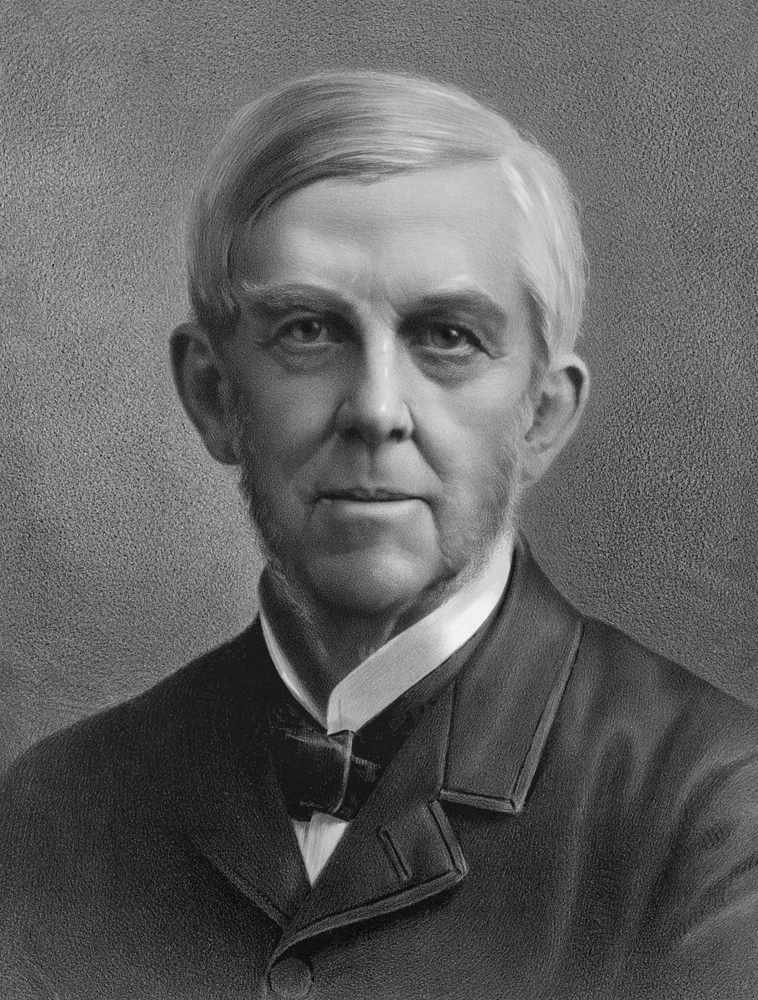
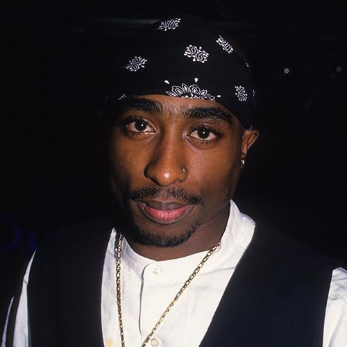

Author Quotes
“Privilege, you see, is one of the great adversaries of the imagination; it spreads a thick layer of adipose tissue over our sensitivity.”
Chino Achebe
"It is impossible to live without failing at something, unless you live so cautiously that you might as well not have lived at all - in which case, you fail by default."
J.K. Rowling
"Anyone who has never made a mistake has never tried anything new."
Albert Einstein

“Everyone can rise above their circumstances and achieve success if they are dedicated to and passionate about what they do.”
Nelson Mandela

“Most of the important things in the world have been accomplished by people who have kept on trying when there seemed to be no hope at all.”
Dale Carnegie
Musician Quote
“Take a music bath once or twice a week for a few seasons, and you will find that it is to the soul what the water bath is to the body.”
Oliver Wendell Holmes
" It's a struggle for every young Black man. You know how it is, only God can judge us.”
Tupac Shakur

“A great song should lift your heart, warm the soul and make you feel good.”
Colbie Caillat